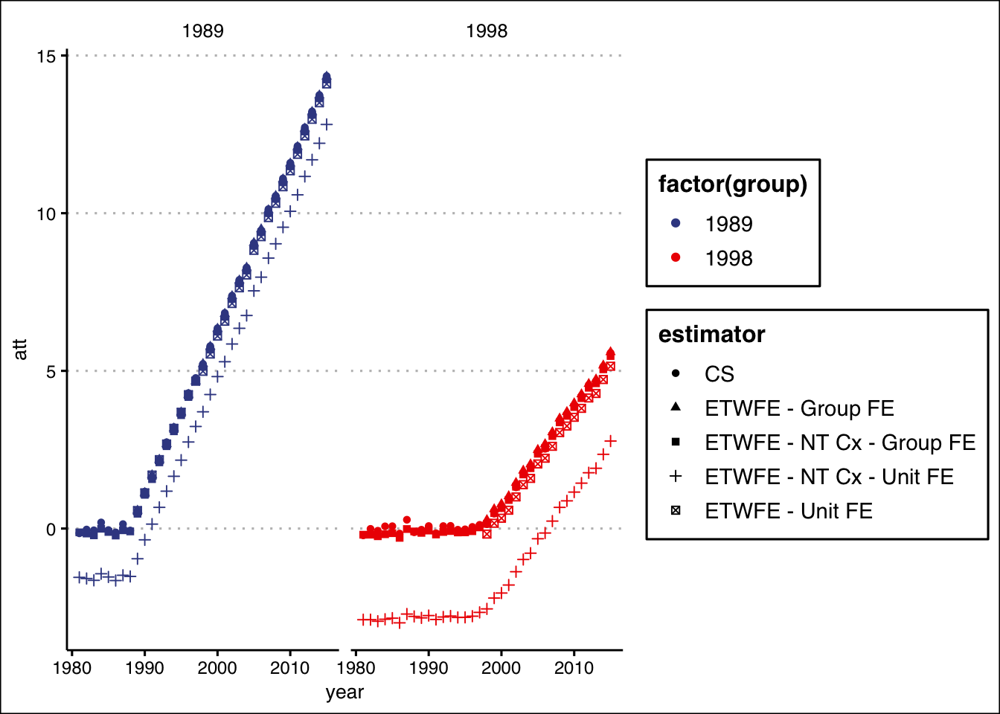

Simulate DID Data
Plot Data

Extended TWFE Model
The problem I’m running into here is as follows. In a panel where there is a later treated unit (e.g., 2007) there should be no interactions with years at or above this. The problem is that when I run it this way, the constant term that is fit in Stata is not fit in R,so the coefficients are off. Only if I allow for these interactions will the coefficients be correct for the first treated groups, but not the latter.
Maybe see here?
Debugging
Structuring the data
- Need to only make interactions between group (
treatment_time) and time (year) whereyear>treatment_time
# This data frame is structured to use not-yet-treated groups as controls.
df_etwfe6 <-
data6 %>%
mutate_at(vars(treatment_time,year), function(x) as.numeric(paste0(x))) %>%
mutate(max_treat = max(treatment_time, na.rm=TRUE)) %>%
# DROP ALL OBSERVATIONS THAT AREN'T iDENTIFIED
filter(year < max_treat) %>%
mutate(year_lt_treatment_time = as.integer(year < treatment_time)) %>%
mutate(year_tmp = case_when(year >= treatment_time ~ year)) %>%
#mutate(year_tmp = case_when(year >= treatment_time & year < max(treatment_time,na.rm=TRUE) ~ year)) %>% THIS IS THE PROBLEMATIC LINE
mutate(treatment_time_tmp = case_when(year >= treatment_time ~ treatment_time)) %>%
mutate(treatment_time = ifelse(is.na(treatment_time),0,treatment_time)) %>%
mutate(treatment_time = factor(treatment_time),
year = factor(year)) %>%
mutate(treatment_time_tmp = factor(treatment_time_tmp),
year_tmp = factor(year_tmp)) %>%
mutate(i = interaction(treat,treatment_time_tmp,year_tmp,sep=":")) %>%
mutate(i = paste0(i)) %>%
dummy_cols("i") %>%
janitor::clean_names() All Groups Eventually Treated
Using group fixed effects.
#1a jwdid dep_var , ivar(unit) tvar(year) gvar(treatment_time) group
fmla1a <- as.formula(glue("dep_var ~ {paste0(grep('i_1_',colnames(df_etwfe6),value=TRUE),collapse = '+')} | treatment_time + year"))
fmla1adep_var ~ i_1_1989_1989 + i_1_1989_1990 + i_1_1989_1991 + i_1_1989_1992 +
i_1_1989_1993 + i_1_1989_1994 + i_1_1989_1995 + i_1_1989_1996 +
i_1_1989_1997 + i_1_1989_1998 + i_1_1989_1999 + i_1_1989_2000 +
i_1_1989_2001 + i_1_1989_2002 + i_1_1989_2003 + i_1_1989_2004 +
i_1_1989_2005 + i_1_1989_2006 + i_1_1998_1998 + i_1_1998_1999 +
i_1_1998_2000 + i_1_1998_2001 + i_1_1998_2002 + i_1_1998_2003 +
i_1_1998_2004 + i_1_1998_2005 + i_1_1998_2006 | treatment_time +
yearfit1a <- feols(fmla1a,df_etwfe6); fit1aOLS estimation, Dep. Var.: dep_var
Observations: 5,508
Fixed-effects: treatment_time: 3, year: 27
Standard-errors: Clustered (treatment_time)
Estimate Std. Error t value Pr(>|t|)
i_1_1989_1989 0.550551 0.083236 6.61432 2.2103e-02 *
i_1_1989_1990 1.097450 0.029460 37.25211 7.1983e-04 ***
i_1_1989_1991 1.649690 0.032895 50.14942 3.9738e-04 ***
i_1_1989_1992 2.091558 0.018832 111.06601 8.1056e-05 ***
i_1_1989_1993 2.706269 0.044696 60.54856 2.7266e-04 ***
i_1_1989_1994 3.117833 0.009088 343.06036 8.4968e-06 ***
i_1_1989_1995 3.548997 0.005236 677.86613 2.1763e-06 ***
i_1_1989_1996 4.190584 0.008500 493.02953 4.1139e-06 ***
... 19 coefficients remaining (display them with summary() or use argument n)
---
Signif. codes: 0 '***' 0.001 '**' 0.01 '*' 0.05 '.' 0.1 ' ' 1
RMSE: 1.55415 Adj. R2: 0.688456
Within R2: 0.433584est1a <-
tidy(fit1a) %>%
separate(term, into =c("tmp","tmp2","group","year")) %>%
mutate(att = estimate) %>%
select(group, year , att) %>%
mutate(estimator = "ETWFE - Group FE") %>%
mutate_at(vars(group,year), as.numeric)
stata("jwdid dep_var , ivar(unit) tvar(year) gvar(treatment_time) group", data.in = data6 %>% mutate_at(vars(year,treatment_time),function(x) as.numeric(paste0(x)))). jwdid dep_var , ivar(unit) tvar(year) gvar(treatment_time) group
WARNING: Singleton observations not dropped; statistical significance is biased
> (link)
(MWFE estimator converged in 2 iterations)
HDFE Linear regression Number of obs = 5,508
Absorbing 2 HDFE groups F( 27, 199) = 29.74
Statistics robust to heteroskedasticity Prob > F = 0.0000
R-squared = 0.6916
Adj R-squared = 0.6885
Within R-sq. = 0.4336
Number of clusters (unit) = 200 Root MSE = 1.5621
(Std. Err. adjusted for 200 clusters in unit)
------------------------------------------------------------------------------
| Robust
dep_var | Coef. Std. Err. t P>|t| [95% Conf. Interval]
-------------+----------------------------------------------------------------
treatment_~e#|
year#|
c.__tr__ |
1989 1989 | .5505505 .0856819 6.43 0.000 .3815895 .7195116
1989 1990 | 1.09745 .1012055 10.84 0.000 .8978769 1.297023
1989 1991 | 1.64969 .0984294 16.76 0.000 1.455591 1.843788
1989 1992 | 2.091558 .1270886 16.46 0.000 1.840945 2.342172
1989 1993 | 2.706269 .1405392 19.26 0.000 2.429132 2.983406
1989 1994 | 3.117833 .1547081 20.15 0.000 2.812755 3.42291
1989 1995 | 3.548997 .1871525 18.96 0.000 3.17994 3.918054
1989 1996 | 4.190584 .2031831 20.62 0.000 3.789915 4.591252
1989 1997 | 4.560902 .2223433 20.51 0.000 4.12245 4.999353
1989 1998 | 5.274783 .2381306 22.15 0.000 4.805199 5.744366
1989 1999 | 5.799933 .2777758 20.88 0.000 5.252171 6.347695
1989 2000 | 6.12532 .2842315 21.55 0.000 5.564828 6.685812
1989 2001 | 6.657937 .3127127 21.29 0.000 6.041281 7.274593
1989 2002 | 7.132307 .3291643 21.67 0.000 6.48321 7.781405
1989 2003 | 7.846859 .3622341 21.66 0.000 7.132549 8.561169
1989 2004 | 8.352164 .380407 21.96 0.000 7.602018 9.10231
1989 2005 | 8.761887 .3908817 22.42 0.000 7.991085 9.532689
1989 2006 | 9.213217 .4329893 21.28 0.000 8.359381 10.06705
1998 1998 | .4548369 .0974278 4.67 0.000 .2627134 .6469604
1998 1999 | .6896868 .0978636 7.05 0.000 .496704 .8826696
1998 2000 | .8477485 .1120189 7.57 0.000 .6268522 1.068645
1998 2001 | 1.223767 .1228332 9.96 0.000 .9815457 1.465989
1998 2002 | 1.424722 .1439758 9.90 0.000 1.140808 1.708637
1998 2003 | 1.89068 .1665003 11.36 0.000 1.562349 2.219011
1998 2004 | 2.13663 .1823018 11.72 0.000 1.777139 2.496121
1998 2005 | 2.578458 .2068636 12.46 0.000 2.170532 2.986384
1998 2006 | 2.820769 .2196635 12.84 0.000 2.387602 3.253936
|
_cons | -.0060328 .0754332 -0.08 0.936 -.1547838 .1427183
------------------------------------------------------------------------------
Absorbed degrees of freedom:
--------------------------------------------------------+
Absorbed FE | Categories - Redundant = Num. Coefs |
----------------+---------------------------------------|
treatment_time | 3 0 3 |
year | 27 1 26 |
--------------------------------------------------------+est1a %>% kable()| group | year | att | estimator |
|---|---|---|---|
| 1989 | 1989 | 0.5505505 | ETWFE - Group FE |
| 1989 | 1990 | 1.0974499 | ETWFE - Group FE |
| 1989 | 1991 | 1.6496898 | ETWFE - Group FE |
| 1989 | 1992 | 2.0915583 | ETWFE - Group FE |
| 1989 | 1993 | 2.7062687 | ETWFE - Group FE |
| 1989 | 1994 | 3.1178326 | ETWFE - Group FE |
| 1989 | 1995 | 3.5489970 | ETWFE - Group FE |
| 1989 | 1996 | 4.1905836 | ETWFE - Group FE |
| 1989 | 1997 | 4.5609016 | ETWFE - Group FE |
| 1989 | 1998 | 5.2747825 | ETWFE - Group FE |
| 1989 | 1999 | 5.7999327 | ETWFE - Group FE |
| 1989 | 2000 | 6.1253203 | ETWFE - Group FE |
| 1989 | 2001 | 6.6579370 | ETWFE - Group FE |
| 1989 | 2002 | 7.1323074 | ETWFE - Group FE |
| 1989 | 2003 | 7.8468588 | ETWFE - Group FE |
| 1989 | 2004 | 8.3521641 | ETWFE - Group FE |
| 1989 | 2005 | 8.7618869 | ETWFE - Group FE |
| 1989 | 2006 | 9.2132170 | ETWFE - Group FE |
| 1998 | 1998 | 0.4548369 | ETWFE - Group FE |
| 1998 | 1999 | 0.6896868 | ETWFE - Group FE |
| 1998 | 2000 | 0.8477485 | ETWFE - Group FE |
| 1998 | 2001 | 1.2237674 | ETWFE - Group FE |
| 1998 | 2002 | 1.4247225 | ETWFE - Group FE |
| 1998 | 2003 | 1.8906801 | ETWFE - Group FE |
| 1998 | 2004 | 2.1366302 | ETWFE - Group FE |
| 1998 | 2005 | 2.5784581 | ETWFE - Group FE |
| 1998 | 2006 | 2.8207688 | ETWFE - Group FE |
Using unit fixed effects – this one runs into p
#2b jwdid dep_var , ivar(unit) tvar(year) gvar(treatment_time)
fmla1b <- as.formula(glue("dep_var ~ {paste0(grep('i_1_',colnames(df_etwfe6),value=TRUE),collapse = '+')} | unit + year"))
fit1b <- feols(fmla1b,df_etwfe6)
est1b <-
tidy(fit1b) %>%
separate(term, into =c("tmp","tmp2","group","year")) %>%
mutate(att = estimate) %>%
select(group, year , att) %>%
mutate(estimator = "ETWFE - Unit FE") %>%
mutate_at(vars(group,year), as.numeric)Only Use a Never Treated Group as Control
df_etwfe6b <-
data6b %>%
mutate_at(vars(treatment_time,year), function(x) as.numeric(paste0(x))) %>%
group_by(treatment_time) %>%
arrange(treatment_time,year) %>%
mutate(first_year = as.integer(row_number()==1)) %>%
mutate(treatment_time = ifelse(is.na(treatment_time),0,treatment_time)) %>%
mutate(year_tmp = case_when(year >= treatment_time ~ year)) %>%
mutate(treatment_time_tmp = case_when(year >= treatment_time~ treatment_time)) %>%
mutate(treatment_time = factor(treatment_time),
year = factor(year)) %>%
mutate(treatment_time_tmp = factor(treatment_time_tmp),
year_tmp = factor(year_tmp)) %>%
mutate(i = interaction(treat,treatment_time_tmp,year_tmp,sep=":")) %>%
mutate(i = paste0(i)) %>%
dummy_cols("i") %>%
janitor::clean_names() %>%
select(-i_na)
# This data frame is structured to only use never-treated groups as controls.
df_etwfe6b_nt <-
data6b %>%
mutate_at(vars(treatment_time,year), function(x) as.numeric(paste0(x))) %>%
mutate(treat = 1) %>%
mutate(treatment_time = ifelse(is.na(treatment_time),0,treatment_time)) %>%
group_by(treatment_time) %>%
mutate(first_year = as.integer(year == min(year,na.rm=TRUE))) %>%
ungroup() %>%
# mutate(year_tmp = year,
# treatment_time_tmp = treatment_time) %>%
mutate(year_tmp = case_when(first_year!=1 ~ year)) %>%
mutate(treatment_time_tmp = case_when( first_year != 1~ treatment_time)) %>%
mutate(treatment_time_tmp = factor(treatment_time_tmp),
year_tmp = factor(year_tmp)) %>%
mutate(treatment_time = factor(treatment_time),
year = factor(year)) %>%
mutate(i = interaction(treat,treatment_time_tmp,year_tmp,sep=":")) %>%
mutate(i = paste0(i)) %>%
dummy_cols("i") %>%
janitor::clean_names() %>%
select(-contains("i_1_0_"))
grep('i_1_',colnames(df_etwfe6b_nt),value=TRUE) [1] "i_1_1989_1981" "i_1_1989_1982" "i_1_1989_1983" "i_1_1989_1984"
[5] "i_1_1989_1985" "i_1_1989_1986" "i_1_1989_1987" "i_1_1989_1988"
[9] "i_1_1989_1989" "i_1_1989_1990" "i_1_1989_1991" "i_1_1989_1992"
[13] "i_1_1989_1993" "i_1_1989_1994" "i_1_1989_1995" "i_1_1989_1996"
[17] "i_1_1989_1997" "i_1_1989_1998" "i_1_1989_1999" "i_1_1989_2000"
[21] "i_1_1989_2001" "i_1_1989_2002" "i_1_1989_2003" "i_1_1989_2004"
[25] "i_1_1989_2005" "i_1_1989_2006" "i_1_1989_2007" "i_1_1989_2008"
[29] "i_1_1989_2009" "i_1_1989_2010" "i_1_1989_2011" "i_1_1989_2012"
[33] "i_1_1989_2013" "i_1_1989_2014" "i_1_1989_2015" "i_1_1998_1981"
[37] "i_1_1998_1982" "i_1_1998_1983" "i_1_1998_1984" "i_1_1998_1985"
[41] "i_1_1998_1986" "i_1_1998_1987" "i_1_1998_1988" "i_1_1998_1989"
[45] "i_1_1998_1990" "i_1_1998_1991" "i_1_1998_1992" "i_1_1998_1993"
[49] "i_1_1998_1994" "i_1_1998_1995" "i_1_1998_1996" "i_1_1998_1997"
[53] "i_1_1998_1998" "i_1_1998_1999" "i_1_1998_2000" "i_1_1998_2001"
[57] "i_1_1998_2002" "i_1_1998_2003" "i_1_1998_2004" "i_1_1998_2005"
[61] "i_1_1998_2006" "i_1_1998_2007" "i_1_1998_2008" "i_1_1998_2009"
[65] "i_1_1998_2010" "i_1_1998_2011" "i_1_1998_2012" "i_1_1998_2013"
[69] "i_1_1998_2014" "i_1_1998_2015"#2a jwdid dep_var , ivar(unit) tvar(year) gvar(treatment_time) group
fmla2a <- as.formula(glue("dep_var ~ {paste0(grep('i_1_',colnames(df_etwfe6b),value=TRUE),collapse = '+')} | treatment_time + year"))
fmla2adep_var ~ i_1_1989_1989 + i_1_1989_1990 + i_1_1989_1991 + i_1_1989_1992 +
i_1_1989_1993 + i_1_1989_1994 + i_1_1989_1995 + i_1_1989_1996 +
i_1_1989_1997 + i_1_1989_1998 + i_1_1989_1999 + i_1_1989_2000 +
i_1_1989_2001 + i_1_1989_2002 + i_1_1989_2003 + i_1_1989_2004 +
i_1_1989_2005 + i_1_1989_2006 + i_1_1989_2007 + i_1_1989_2008 +
i_1_1989_2009 + i_1_1989_2010 + i_1_1989_2011 + i_1_1989_2012 +
i_1_1989_2013 + i_1_1989_2014 + i_1_1989_2015 + i_1_1998_1998 +
i_1_1998_1999 + i_1_1998_2000 + i_1_1998_2001 + i_1_1998_2002 +
i_1_1998_2003 + i_1_1998_2004 + i_1_1998_2005 + i_1_1998_2006 +
i_1_1998_2007 + i_1_1998_2008 + i_1_1998_2009 + i_1_1998_2010 +
i_1_1998_2011 + i_1_1998_2012 + i_1_1998_2013 + i_1_1998_2014 +
i_1_1998_2015 | treatment_time + yearfit2a <- feols(fmla2a,df_etwfe6b)
est2a <-
tidy(fit2a) %>%
separate(term, into =c("tmp","tmp2","group","year")) %>%
mutate(att = estimate) %>%
select(group, year , att) %>%
mutate(estimator = "ETWFE - Group FE") %>%
mutate_at(vars(group,year), as.numeric)
#2b jwdid dep_var , ivar(unit) tvar(year) gvar(treatment_time)
fmla2b <- as.formula(glue("dep_var ~ {paste0(grep('i_1_',colnames(df_etwfe6b),value=TRUE),collapse = '+')} | unit + year"))
fmla2bdep_var ~ i_1_1989_1989 + i_1_1989_1990 + i_1_1989_1991 + i_1_1989_1992 +
i_1_1989_1993 + i_1_1989_1994 + i_1_1989_1995 + i_1_1989_1996 +
i_1_1989_1997 + i_1_1989_1998 + i_1_1989_1999 + i_1_1989_2000 +
i_1_1989_2001 + i_1_1989_2002 + i_1_1989_2003 + i_1_1989_2004 +
i_1_1989_2005 + i_1_1989_2006 + i_1_1989_2007 + i_1_1989_2008 +
i_1_1989_2009 + i_1_1989_2010 + i_1_1989_2011 + i_1_1989_2012 +
i_1_1989_2013 + i_1_1989_2014 + i_1_1989_2015 + i_1_1998_1998 +
i_1_1998_1999 + i_1_1998_2000 + i_1_1998_2001 + i_1_1998_2002 +
i_1_1998_2003 + i_1_1998_2004 + i_1_1998_2005 + i_1_1998_2006 +
i_1_1998_2007 + i_1_1998_2008 + i_1_1998_2009 + i_1_1998_2010 +
i_1_1998_2011 + i_1_1998_2012 + i_1_1998_2013 + i_1_1998_2014 +
i_1_1998_2015 | unit + yearfit2b <- feols(fmla2b,df_etwfe6b)
est2b <-
tidy(fit2b) %>%
separate(term, into =c("tmp","tmp2","group","year")) %>%
mutate(att = estimate) %>%
select(group, year , att) %>%
mutate(estimator = "ETWFE - Unit FE") %>%
mutate_at(vars(group,year), as.numeric)#2b jwdid dep_var , ivar(unit) tvar(year) gvar(treatment_time)
fmla2b <- as.formula(glue("dep_var ~ {paste0(grep('i_1_',colnames(df_etwfe6b),value=TRUE),collapse = '+')} | unit + year"))
fmla2bdep_var ~ i_1_1989_1989 + i_1_1989_1990 + i_1_1989_1991 + i_1_1989_1992 +
i_1_1989_1993 + i_1_1989_1994 + i_1_1989_1995 + i_1_1989_1996 +
i_1_1989_1997 + i_1_1989_1998 + i_1_1989_1999 + i_1_1989_2000 +
i_1_1989_2001 + i_1_1989_2002 + i_1_1989_2003 + i_1_1989_2004 +
i_1_1989_2005 + i_1_1989_2006 + i_1_1989_2007 + i_1_1989_2008 +
i_1_1989_2009 + i_1_1989_2010 + i_1_1989_2011 + i_1_1989_2012 +
i_1_1989_2013 + i_1_1989_2014 + i_1_1989_2015 + i_1_1998_1998 +
i_1_1998_1999 + i_1_1998_2000 + i_1_1998_2001 + i_1_1998_2002 +
i_1_1998_2003 + i_1_1998_2004 + i_1_1998_2005 + i_1_1998_2006 +
i_1_1998_2007 + i_1_1998_2008 + i_1_1998_2009 + i_1_1998_2010 +
i_1_1998_2011 + i_1_1998_2012 + i_1_1998_2013 + i_1_1998_2014 +
i_1_1998_2015 | unit + yearfit2b <- feols(fmla2b,df_etwfe6b)
est2b <-
tidy(fit2b) %>%
separate(term, into =c("tmp","tmp2","group","year")) %>%
mutate(att = estimate) %>%
select(group, year , att) %>%
mutate(estimator = "ETWFE - Unit FE") %>%
mutate_at(vars(group,year), as.numeric)
## NEED TO GET RID OF ONE MORE CATEGORY (1998 x 1980)
#2c jwdid dep_var , ivar(unit) tvar(year) gvar(treatment_time) group never
fmla2c <- as.formula(glue("dep_var ~ {paste0(grep('i_1_',colnames(df_etwfe6b_nt),value=TRUE),collapse = '+')} | treatment_time + year"))
fit2c <- feols(fmla2c,df_etwfe6b_nt)
est2c <-
tidy(fit2c) %>%
separate(term, into =c("tmp","tmp2","group","year")) %>%
mutate(att = estimate) %>%
select(group, year , att) %>%
mutate(estimator = "ETWFE - NT Cx - Group FE") %>%
mutate_at(vars(group,year), as.numeric)
#2d jwdid dep_var , ivar(unit) tvar(year) gvar(treatment_time) never !!!! THIS ONE SEEMS TO BE WRONG IN STATA ...
fmla2d <- as.formula(glue("dep_var ~ {paste0(grep('i_1_',colnames(df_etwfe6b_nt),value=TRUE),collapse = '+')} | unit + year"))
fit2d <- feols(fmla2d,df_etwfe6b_nt %>% mutate(unit = factor(unit)))
est2d <-
tidy(fit2d) %>%
separate(term, into =c("tmp","tmp2","group","year")) %>%
mutate(att = estimate) %>%
select(group, year , att) %>%
mutate(estimator = "ETWFE - NT Cx - Unit FE") %>%
mutate_at(vars(group,year), as.numeric)
stata("
replace treatment_time = 0 if treatment_time==.
jwdid dep_var , ivar(unit) tvar(year) gvar(treatment_time) never
", data.in = data6b %>% mutate_at(vars(year,treatment_time),function(x) as.numeric(paste0(x)))).
. replace treatment_time = 0 if treatment_time==.
(2,304 real changes made)
. jwdid dep_var , ivar(unit) tvar(year) gvar(treatment_time) never
WARNING: Singleton observations not dropped; statistical significance is biased
> (link)
(MWFE estimator converged in 2 iterations)
HDFE Linear regression Number of obs = 7,344
Absorbing 2 HDFE groups F( 70, 199) = 11.60
Statistics robust to heteroskedasticity Prob > F = 0.0000
R-squared = 0.8801
Adj R-squared = 0.8749
Within R-sq. = 0.6290
Number of clusters (unit) = 200 Root MSE = 1.5535
(Std. Err. adjusted for 200 clusters in unit)
------------------------------------------------------------------------------
| Robust
dep_var | Coef. Std. Err. t P>|t| [95% Conf. Interval]
-------------+----------------------------------------------------------------
treatment_~e#|
year#|
c.__tr__ |
1989 1981 | -1.547624 .7704777 -2.01 0.046 -3.066972 -.0282756
1989 1982 | -1.584289 .7772889 -2.04 0.043 -3.117069 -.0515092
1989 1983 | -1.642049 .7722397 -2.13 0.035 -3.164872 -.1192261
1989 1984 | -1.43341 .7549454 -1.90 0.059 -2.92213 .0553095
1989 1985 | -1.535311 .7726244 -1.99 0.048 -3.058893 -.0117291
1989 1986 | -1.648764 .7700177 -2.14 0.033 -3.167206 -.130323
1989 1987 | -1.481473 .7525563 -1.97 0.050 -2.965481 .0025358
1989 1988 | -1.518695 .7756531 -1.96 0.052 -3.048249 .0108597
1989 1989 | -.9574712 .7657142 -1.25 0.213 -2.467426 .552484
1989 1990 | -.3574772 .7526876 -0.47 0.635 -1.841744 1.12679
1989 1991 | .140598 .7517545 0.19 0.852 -1.341829 1.623025
1989 1992 | .6721532 .7727109 0.87 0.385 -.8515991 2.195905
1989 1993 | 1.184797 .7764752 1.53 0.129 -.3463783 2.715972
1989 1994 | 1.657065 .7854902 2.11 0.036 .1081125 3.206018
1989 1995 | 2.168771 .7807311 2.78 0.006 .6292032 3.708339
1989 1996 | 2.744621 .7966587 3.45 0.001 1.173644 4.315597
1989 1997 | 3.236545 .802859 4.03 0.000 1.653342 4.819748
1989 1998 | 3.702205 .8068537 4.59 0.000 2.111125 5.293285
1989 1999 | 4.24945 .8216235 5.17 0.000 2.629244 5.869656
1989 2000 | 4.81904 .8267467 5.83 0.000 3.188732 6.449349
1989 2001 | 5.289953 .8324853 6.35 0.000 3.648329 6.931578
1989 2002 | 5.852231 .8518576 6.87 0.000 4.172404 7.532057
1989 2003 | 6.35007 .8571423 7.41 0.000 4.659822 8.040317
1989 2004 | 6.756413 .880549 7.67 0.000 5.020009 8.492818
1989 2005 | 7.538427 .8896723 8.47 0.000 5.784031 9.292822
1989 2006 | 7.972006 .9043422 8.82 0.000 6.188682 9.755329
1989 2007 | 8.576618 .9269071 9.25 0.000 6.748798 10.40444
1989 2008 | 9.029933 .938673 9.62 0.000 7.178911 10.88096
1989 2009 | 9.555117 .956706 9.99 0.000 7.668534 11.4417
1989 2010 | 10.06048 .9658729 10.42 0.000 8.155825 11.96514
1989 2011 | 10.58318 .9875133 10.72 0.000 8.635846 12.53051
1989 2012 | 11.1655 1.003004 11.13 0.000 9.187621 13.14338
1989 2013 | 11.69397 1.012015 11.56 0.000 9.698322 13.68962
1989 2014 | 12.21836 1.044331 11.70 0.000 10.15898 14.27773
1989 2015 | 12.81408 1.06626 12.02 0.000 10.71146 14.91669
1998 1981 | -2.891191 1.4403 -2.01 0.046 -5.731399 -.0509824
1998 1982 | -2.889899 1.438253 -2.01 0.046 -5.726071 -.0537267
1998 1983 | -2.9394 1.426655 -2.06 0.041 -5.752702 -.1260988
1998 1984 | -2.876048 1.426257 -2.02 0.045 -5.688565 -.0635305
1998 1985 | -2.842289 1.438295 -1.98 0.050 -5.678544 -.0060341
1998 1986 | -2.990234 1.422831 -2.10 0.037 -5.795996 -.1844721
1998 1987 | -2.71098 1.413242 -1.92 0.057 -5.497833 .0758717
1998 1988 | -2.78655 1.437245 -1.94 0.054 -5.620734 .0476345
1998 1989 | -2.832501 1.43221 -1.98 0.049 -5.656757 -.0082451
1998 1990 | -2.759115 1.420724 -1.94 0.054 -5.56072 .0424909
1998 1991 | -2.883721 1.399811 -2.06 0.041 -5.644088 -.123354
1998 1992 | -2.804369 1.423898 -1.97 0.050 -5.612234 .0034966
1998 1993 | -2.774502 1.41303 -1.96 0.051 -5.560936 .0119319
1998 1994 | -2.81939 1.425141 -1.98 0.049 -5.629705 -.0090743
1998 1995 | -2.815639 1.411897 -1.99 0.047 -5.599839 -.0314392
1998 1996 | -2.779294 1.440586 -1.93 0.055 -5.620068 .0614789
1998 1997 | -2.658515 1.43755 -1.85 0.066 -5.493302 .1762725
1998 1998 | -2.547614 1.415547 -1.80 0.073 -5.339012 .2437835
1998 1999 | -2.204368 1.404752 -1.57 0.118 -4.974479 .5657427
1998 2000 | -2.044966 1.40235 -1.46 0.146 -4.810338 .7204066
1998 2001 | -1.790538 1.391114 -1.29 0.200 -4.533754 .9526785
1998 2002 | -1.368831 1.383051 -0.99 0.324 -4.096148 1.358486
1998 2003 | -.9809712 1.370899 -0.72 0.475 -3.684325 1.722382
1998 2004 | -.7812189 1.377396 -0.57 0.571 -3.497384 1.934946
1998 2005 | -.3232407 1.389143 -0.23 0.816 -3.062571 2.416089
1998 2006 | -.1415136 1.365938 -0.10 0.918 -2.835083 2.552056
1998 2007 | .2364609 1.367123 0.17 0.863 -2.459446 2.932368
1998 2008 | .671513 1.368328 0.49 0.624 -2.026771 3.369797
1998 2009 | .8786274 1.373172 0.64 0.523 -1.829208 3.586462
1998 2010 | 1.156292 1.368928 0.84 0.399 -1.543175 3.855758
1998 2011 | 1.4396 1.375672 1.05 0.297 -1.273165 4.152365
1998 2012 | 1.768957 1.35629 1.30 0.194 -.9055885 4.443502
1998 2013 | 1.911296 1.353292 1.41 0.159 -.7573372 4.579929
1998 2014 | 2.354145 1.354785 1.74 0.084 -.3174335 5.025723
1998 2015 | 2.775042 1.364392 2.03 0.043 .0845195 5.465565
|
_cons | 1.455016 .7264596 2.00 0.047 .0224693 2.887563
------------------------------------------------------------------------------
Absorbed degrees of freedom:
-----------------------------------------------------+
Absorbed FE | Categories - Redundant = Num. Coefs |
-------------+---------------------------------------|
unit | 200 200 0 *|
year | 36 1 35 |
-----------------------------------------------------+
* = FE nested within cluster; treated as redundant for DoF computation
. Estimate CS
data6_cs <-
data6 %>%
mutate(year = as.numeric(paste0(year)),
treatment_time = as.numeric(paste0(treatment_time))) %>%
mutate(treatment_time = ifelse(is.na(treatment_time),0,treatment_time))
fit_cs6 <- att_gt(yname = "dep_var",
tname = "year",
idname = "unit",
gname = "treatment_time",
control_group = "notyettreated",
data = data6_cs
)Warning in pre_process_did(yname = yname, tname = tname, idname = idname, :
Dropped 4 observations while converting to balanced panel.est_cs6 <- tibble(group = fit_cs6$group, year = fit_cs6$t, att = fit_cs6$att) %>%
mutate(estimator = "CS") data6b_cs <-
data6b %>%
mutate(year = as.numeric(paste0(year)),
treatment_time = as.numeric(paste0(treatment_time))) %>%
mutate(treatment_time = ifelse(is.na(treatment_time),0,treatment_time))Warning in mask$eval_all_mutate(quo): NAs introduced by coercionfit_cs6b <- att_gt(yname = "dep_var",
tname = "year",
idname = "unit",
gname = "treatment_time",
control_group = "nevertreated",
data = data6b_cs
)Warning in pre_process_did(yname = yname, tname = tname, idname = idname, :
Dropped 4 observations while converting to balanced panel.est_cs6b <- tibble(group = fit_cs6b$group, year = fit_cs6b$t, att = fit_cs6b$att) %>%
mutate(estimator = "CS")Compare
est1a %>%
bind_rows(est1b) %>%
bind_rows(est_cs6) %>%
ggplot(aes(x = year, y = att, colour = factor(group), pch = estimator)) +
geom_point() +
theme_clean() +
ggsci::scale_color_aaas() est2a %>%
bind_rows(est2b) %>%
bind_rows(est2c) %>%
bind_rows(est2d) %>%
bind_rows(est_cs6b) %>%
ggplot(aes(x = year, y = att, colour = factor(group), pch = estimator)) +
geom_point() +
theme_clean() +
ggsci::scale_color_aaas() +
#scale_shape_manual(values =c(19,4,3)) +
facet_grid(~group)